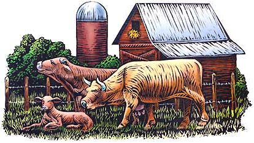
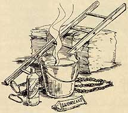
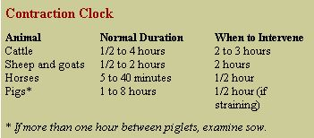
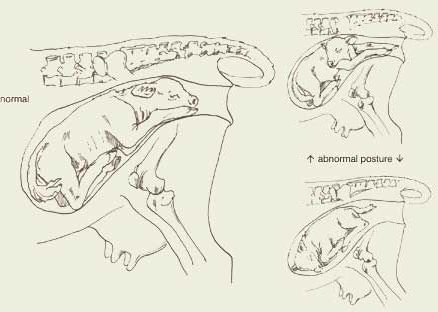
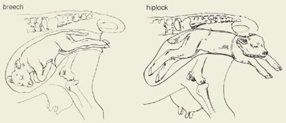
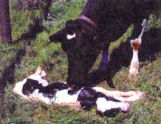

It's A Boy!
By Jon Geller, DVM
April/May 2001
The frigid morning air prompted a shiver, and then a yawn, from me as I anticipated the end of my shift. One more heifer to calve and I could retire to my bunk. Every night for four weeks, we helped deliver 80 to 100 calves to first-time heifers. The Padlock Ranch, with its huge expanse, was well-known for its progressive approach to the cattle business.
I herded the heifer down the alley into a pen so she could be observed more closely. The plan was to leave her undisturbed so she could hopefully calve unassisted. If she had difficulty, we would assist.
PREVENTING DYSTOCIA
Dystocia, or difficult labor, is intertwined with the management practices of the farmer or rancher. Careful record-keeping can identify lines of cattle, sheep, goats, horses or pigs that have more difficulty with calving, lambing, kidding, foaling or farrowing. Crossbreeding, which often improves the genetic vigor of offspring, often results in a higher incidence of dystocia.
Most animals require little assistance with birthing when they receive a high level of nutrition. If the pregnant animal is too thin or too heavy, problems can occur. Heifers on the Padlock Ranch gained about 100 to 120 pounds during the last trimester.
In contrast to the commercial rancher or farmer, the family homesteader should allow their brood stock an additional year to mature before they give birth since most birthing difficulties occur in young, first-time mothers. In cattle, half of all dystocias occur in first-calf heifers.
OBSERVATION AND HANDLING
Close but unobtrusive observation of prospective mothers is another key to preventing dystocia. With planned breeding, the birthing season can be condensed to a shorter time frame, making observation more practical. On the Padlock Ranch, all heifers were checked by a cowboy every three hours.
Proactive livestock owners should have a mutually beneficial relationship with their veterinarian. They must learn to recognize early signs of dystocia, and know when a vet is and is not needed. Often, the time required to get help may jeopardize the life of the calf, lamb, kid or foal.
FACILITIES
Under reasonable weather conditions, most expectant dams would prefer to give birth outside in the pasture. Only when the weather is grim, or the expectant mother is having difficulty, should the animal be moved to a calving or lambing shed. For some animals not used to human contact, the disadvantages of moving them to an inside area, in closer contact with humans, must be weighed carefully.
The family homesteader should allow their brood stock an additional year to mature since most birthing difficulties occur in young, first-time mothers.
A calving shed should contain a well-lit maternity room of at least 18 square feet of that can be kept warm and clean and is easy to sanitize. The room should contain a sturdy head stanchion with upright neck pieces for choke-free restraint, as well as with sturdy hinged wings extending from the head gate. Some method to restrain lateral movement during c-sections should be provided (gentle dairy and range cattle need less restraint). Floors should be either concrete or dirt and covered with straw.
EQUIPMENT AND SUPPLIES
For lubrication I use carboxymethylcellulose, a veterinary expanding lubricant that works quite well. Many livestock owners, however, use tubs of shortening, petroleum jelly or mineral oil, all of which are effective. Of these, shortening is the best due to its availability, lubricating quality and sterility.
To help pull a calf, obstetrical chains are far superior to rope because they are easily sanitized and have handles. In a bind a cotton clothesline can be used, but should be discarded between births due to the risk of bacterial infection. Nylon straps are sometimes used, but are difficult to sanitize.
Fetal extractors are jack-like instruments that are potentially dangerous in the wrong hands. They can cause permanent paralysis in cows when excessive traction is used.
THE THREE STAGES OF LABOR
Livestock owners should be aware of changes in their brood stocks' condition, especially when breeding dates are not known. Enlargement of the vulva and mammary glands is the most noticeable indicator, but it varies considerably among individual animals. In the mare, waxing of the mammary glands with precolostral secretions may be seen.
Your veterinarian will notice rectal palpations and the relaxation of sacrosciatic ligaments. A vaginal exam will show cervical dilation; once the cervix is open enough to allow a hand to pass through, parturition (birthing) is expected within six to 24 hours.
Parturition involves a complex set of hormonal interactions. During cervical dilation - the first stage of labor - signs are absent. An observant herdsman might note restlessness and a tendency to lie down and get up repeatedly. In ruminants, this stage can last anywhere from two to six hours; in the mare, it usually lasts about four hours; in swine, anywhere from two to 12 hours.

Supply List
There are several ways in which you can assist with delivery before calling a veterinarian. If you anticipate assisting in one of your brood stocks' births be sure to secure the following equipment ' and supplies:
1. Disinfectant and stainless-steel bucket
2. Source of hot water
3. Lubricant (one of the following):
•K-Y Jelly
•Shortening
• Carboxymethylcellulose
•Mineral oil
4. Obstetrical chains
5. Wooden ladder or plank (to push against while you're pulling the fetus)
The second stage of parturition is fetal expulsion. Fetal parts enter the birth canal and stimulate abdominal pressing, causing contractions about every 15 minutes. Contractions will increase to one every three to five minutes until the head appears. When the amniotic sac appears at the vulva, delivery is usually within two hours.
The third stage of labor is the expulsion of fetal membranes, which usually occurs within eight hours. Many cows will readily eat the placenta, leaving no evidence of the afterbirth. When the placenta is seen hanging from the cow's vulva do not attempt to manually remove it; this can lead to permanent uterine damage and infertility.
INTERVENTION
After six hours of first-stage labor, which is characterized by restlessness, the cow should be examined. Once second-stage labor begins, an exam should be done
after two or three hours, or within two hours if the amniotic sac is visible at the vulva. If blood-tinged vulvar secretions are seen this may be a grave indicator for the fetus, and veterinary assistance should be pursued immediately.
If-the calf is very large, or cannot be successfully repositioned, a cesarean section is warranted.
DELIVERY ASSISTANCE

If progress is slow or nonexistent you can assist with delivery in several ways before calling a veterinarian. When extracting an oversize calf, the farmer/rancher should use the following guidelines:
1) Use good sanitation, since infertility often results from unsanitary technique. To do this, wear plastic gloves or wash hands thoroughly in disinfectant solution. Tie the cow's tail to her neck and clean the region around the vulva with disinfectant soap.
2) Extract the calf in either the anterior or posterior (breech) position, keeping in mind that in breech position the calf's umbilicus will be severed before its head is out, necessitating quick extraction.
3) The calf must always have the top of its body toward the top of the mother (dorsosacral position).
4) Pulling the fetus (traction) should be done with no more force than can be applied by two or three men.
5) After half than a half an hour has passed, seek professional help.
DILATING THE BIRTH CANAL
If the birth canal does not feel adequately dilated during the exam, it should be enlarged manually. This is done by clasping the well-lubricated hands together, pushing into the birth canal and expanding the elbows for up to 20 minutes.
EXTRACTING THE OVERSIZE FETUS
To assist in extracting an oversize fetus, loop the obstetrical chains around the pasterns, coming off the top, or dorsal, surface of the legs. By this time, the heifer should be lying down.
Timing your pulls with the heifer's pushes, pull on one chain at a time until each shoulder passes through. Once the shoulders are through, rotate the fetus 90° so that the pelvis passes through the maternal birth canal at its widest part. If the shoulders will not pass, your veterinarian will have to perform a cesarean section or fetotomy.

*In cases of abnormal posture, the fetus should be repelled into the birth canal so that the limb or head can be manipulated into normal position. Orbital hooks or jaw snares may have to be used carefully to pull the head around.
Birth Positions PRESENTATION
Normal: frontwards
Abnormal: backwards or crossways
POSITION
Normal: right side up
Abnormal: upside down or back to the left or right
POSTURE
Normal: head and front legs extended
*Abnormal. head and/or legs retained along either side, or fetus in backward position with one or both legs flexed at the hock (classic "breech" position); in the mare, the foal fetus may adopt a "sitting-dog" posture
*In cases of abnormal posture, the fetus should be repelled into the birth canal so that the limb or head can be manipulated into normal position. Orbital hooks or jaw snares may have to be used carefully to pull the head around.
BREECH BIRTH AND HIPLOCK
When the fetus is in the breech, or posterior position, the back feet will be in the birth canal and can be identified be locating the hocks above the feet. The fetus must be initially rotated 90° so that it is on its side, to take advantage of the largest maternal pelvic diameter. Once the hips are past the pelvic opening, the fetus is rotated back to its original face-down position and pulled out as quickly as possible.
Because the umbilical cord is usually severed as the hips pass out of the vulva, the calf must be extracted within five minutes to avoid oxygen deprivation and permanent brain damage. Traction, or pulling on the calf, should only be applied when the cow or heifer is pressing to avoid fracture of the fetal spine.
Unless a stockman is extremely experienced, a breech presentation usually requires veterinary help. The possibility of complications escalates with a breech birth due to the increased risk of asphyxiation and inadequate dilation of the birth canal.
Hiplock, as the name implies, occurs when the calf is in normal position and is removed up to the hips, which are not able to pass through the pelvis. When this happens, the stockman should immediately encourage the fetus to breathe by stimulating the head vigorously. Poking repeatedly above the upper lip with a piece of straw will stimulate respiration, as will cold water poured on the head.
Traction should be applied only when the cow is pressing to ensure that the birth canal is enlarged. If a calf is stuck it should be repelled, or pushed back into the birth canal, and repositioned so that it is as perpendicular as possible. Three "pullers" may be used to apply traction, but only when the cow is pressing.
CALLING THE VETERINARIAN
Visit with your veterinarian prior to calving or lambing season to review situations when you may be required to help. In general, you should call your veterinarian after 30 minutes of trying to extract a calf without success.
The doctor will first determine if the calf is alive by assessing reflexes or feeling for a heartbeat. If the calf is alive, the size and position will be assessed, and a decision will be made whether to continue with the forced extraction or do a cesarean section.
In continuing with the forced extraction, the veterinarian will manipulate the calf while two assistants apply traction. By repelling and correctly repositioning the calf, it is often possible to extract it.
If the calf is very large, or cannot be successfully repositioned, a cesarean section is warranted. If the calf is dead, a fetotomy is called for.
Cesarean sections are routine surgeries for most experienced large animal veterinarians. The cow or heifer remains in standing position and the veterinarian injects a large amount of a numbing solution into the left flank. After sterilely preparing the area the veterinarian will make an incision through the skin and muscles of the abdomen, and then open the uterus so that the fetus can be extracted through the incision. The abdomen is usually flushed out, an antibiotic injection is given, and the incision is closed with sutures.
Fetotomy is generally reserved for dead calves that should not be removed by cesarean section due to the risk of contaminating the abdomen with decomposing tissue when the uterus is opened. The dead fetus must be cut up into removable parts using a cutting wire and pulley apparatus. Fetotomy is an unpleasant procedure that is done to save the life of the cow or heifer.
By now, Shorty and I were headed over to the main cabin for our breakfast with the other cowboys. Unfortunately, someone had played a trick on the "Cookie" the day before, so he had set out a large pot of leftover beans and a tin of stale corn bread to teach us a lesson.
Listening to the good-natured squabbling of the cowboys, I felt the warmth of the morning sunlight filtering through the glass panes. A wave of sleepiness swept over me. It was time to retire to the bunkhouse and leave the calf-pulling to others.
|
 *In cases of abnormal posture, the fetus should be repelled into the birth canal so that the limb or head can be manipulated into normal position. Orbital hooks or jaw snares may have to be used carefully to pull the head around. |
|
 |
|
 |
 |
 |
|
 |
|
|